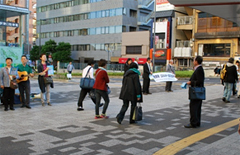
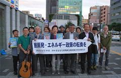
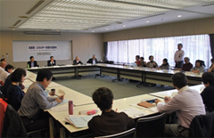
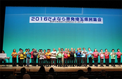
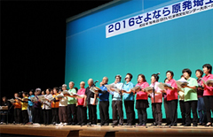
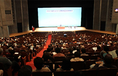
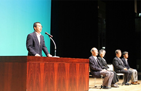
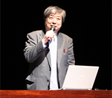
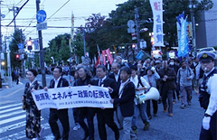
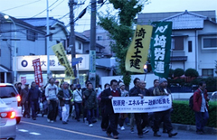

650人が参加、脱原発と再生可能エネルギーの転換を確認
10月29日(土)、14時00分より｢2016さよなら原発埼玉県民集会実行委員会｣の主催で「2016さよなら原発埼玉県民集会」がさいたま市文化センター大ホールで開催し、650人が参加しました。10月14日(金)浦和駅東口での脱原発や県民集会参加の呼びかけ、10月29日(土)は、脱原発県内地域団体交流会、県民集会、南浦和駅西口までのパレードを行いました。なお、実行委員会は脱原発を求める県内の19団体・2個人で構成しました。
≪浦和駅東口でアピール≫
10月14日(金)16時15分～17時00分
|  |  |
JR浦和駅東口にて18人が参加、埼玉合唱団の歌声をバックに｢脱原発！エネルギー政策の転換を｣｢さらなる再稼働反対｣｢10月29日県民集会への参加｣を呼びかけました。
≪脱原発県内地域団体交流会≫
10月29日(土)10時00分～11時30分
 昨年のまとめから、電力自由化問題、避難者の裁判、原発の争点、パレード開催など、日頃、地域団体がどんな活動し、どんな悩みがあるのかなど情報交換と交流を目的に開催し、21団体27人が参加しました。
≪2016さよなら原発埼玉県民集会の概要≫
10月29日(土)14時00分～16時30分
□アトラクション ～～「埼玉のうたごえ協議会＆青い空合唱団」～～
|  |  |
電気ピアノの伴奏で、｢希望の灯｣｢青い空は(ちょうちょ編曲版)｣｢故郷｣の歌を披露されました。
□主催者団体紹介とあいさつ
|  |  |
| 会場全体の様子 | 岩岡副委員長あいさつ |
- 原 明範
- （埼玉県原爆被害者協議会事務局長）
- 森 和江
- （埼玉県地域婦人会連合会副会長）
- 岩岡 宏保
- （埼玉県生活協同組合連合会会長理事）
- 伊藤 稔
- （原水爆禁止埼玉県協議会協代表理事）
- 持田 明彦
- （埼玉県平和運動センター議長）
主催者を代表して岩岡副委員長より｢10月14日の浦和駅頭宣伝行動、午前中の県内脱原発地域団体交流会を開催しました。市民の行動で社会を変えることができます。本日の集会を各団体の活動の発展の契機にしてください｣と挨拶がありました。
□報告・講演
①｢原発事故は終わらない｣ 武藤 類子さん(福島原発告訴団団長)
原発事故から5年7か月が過ぎた福島の原状や、原発事故の刑事的責任を追及する2012年原発告訴団を結成し4年経ってようやく強制起訴なったこと、原発社会に終止符を打つための大切な裁判ですので注目と支援の呼びかけ、最後に告訴団の活動の経緯が映像で紹介されました。
②｢脱原発訴訟の課題と展望｣ 海渡 雄一さん(弁護士･脱原発弁護団全国連絡会代表
世論調査では原発の運転再開に賛成は29%・反対は57％、国民が望んでいることを実現するのが民主主義、中心戦場は地方自治体、自治体と住民で一緒に原発を止めていきましょう。司法の場2人の裁判官が原発差し止めを判断、近い将来、脱原発を達成する日が近づいています。
③「チェルノブイリの祈り」 神田 香織さん（講談師）
30年前に起きたチェルノブイリ原発事故の消化活動にあたって放射線被ばくをしてしまった消防士とその妻の物語の前半の30分を公演されました
|  | ||
| 武藤類子さん | 海渡雄一さん | 神田香織さん |
□募金のお願い
佐藤副委員長よりお願いしました。
□各地の取り組み報告
①「広げよう小さな輪2016in坂戸の取り組み」武井 誠さん（郡山の子どもたちと遊ぶ会）
②｢日本と原発のリレー上映会｣ 野田 千香子さん（原発リレー上映・さいたま）
③｢東日本土壌ベクレルプロジェクト｣ 根岸 主門さん（森の測定室）
④｢自然エネルギーの普及｣ 吉村 文則さん（NPO法人埼玉県自然エネルギー協会）
□アピール
森副委員長より提案し、確認されました。
□閉会あいさつ
持田副委員長があいさつされました
□パレード(さいたま市文化センターから南浦和駅西口まで)
|  |  |